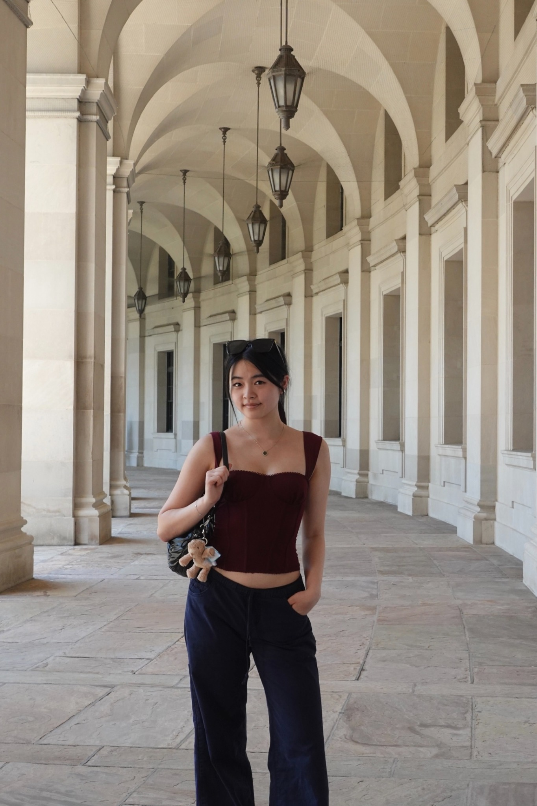

GET TO KNOW ME
A LITTLE
ABOUT ME
“I'm a data-driven builder, curious researcher, and lifelong explorer who enjoys turning complex problems into simple, meaningful solutions.”

LITTLE MOMENTS, ON REPEAT
A moving collection of memories ♡


your favorite café photo

your climbing photo
SMALL DETAILS, BIG PERSONALITY
A Few Things About Me
01
Always exploring
I love discovering new places, trying different foods, and collecting little memories along the way.
02
A curious mind
I enjoy learning new things and understanding how people, technology, and the world work.
03
A little competitive
Whether it's badminton, a new challenge, or solving a tricky problem, I love a good challenge.
04
Creative at heart
Photography, cooking, and finding creative ways to express ideas are some of my favorite things.
MY LITTLE TRAVEL DIARY
Places I've Been
A little map of places, memories, and moments along the way.
click a little pin to explore a memory ♡